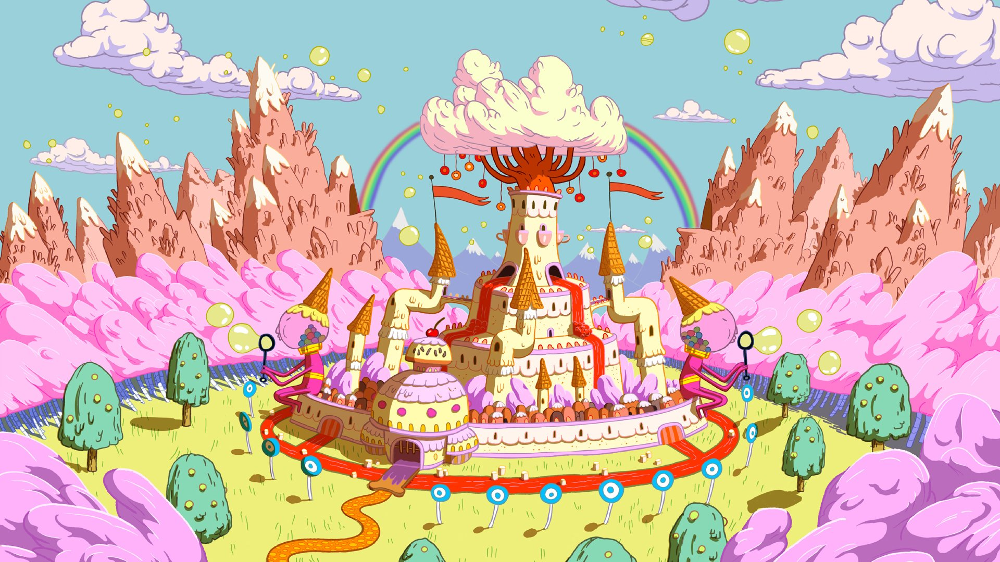
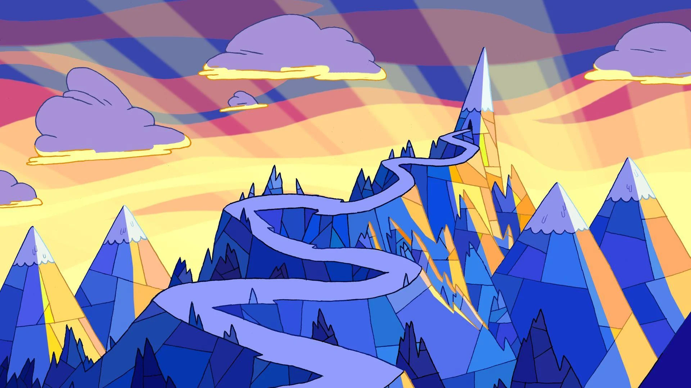

Behind the Scenes of Adventure Time
Creating the Magic: The Making of Adventure Time
Adventure Time's journey from concept to TV screens was a labor of love for its creators, animators, and voice actors. Pendleton Ward, the show's creator, had originally developed the concept as a short film in 2007. The success of this short film led to a full-length series, which debuted in 2010. Ward’s background as a former The Venture Bros. writer, along with his distinct art style, heavily influenced the series' development.
The Art and Animation Style
The visual style of Adventure Time is immediately recognizable due to its colorful and simple animation. The design of characters and settings often features rounded, almost childlike shapes, which contrast with the complex and sometimes adult themes explored in the show. This aesthetic choice was a deliberate one by Ward, who wanted the show to feel like an approachable and fun world, but with hidden depths. The animation style evolved over time, becoming more refined and experimental as the series progressed. The show's ability to visually express abstract concepts, such as the "Hall of Egress," or the “Candy Kingdom” landscape, shows the innovation of the animation team. The show's fluid animation allows for creative scenarios, with characters changing form and landscapes shifting in ways that add to the surreal charm of the show.
Voice Acting and the Characters
A significant part of Adventure Time's success lies in its talented voice cast, many of whom brought the characters to life with their unique performances.
- Jeremy Shada voiced Finn, bringing youthful energy to the character while also delivering emotionally complex moments. Shada’s ability to convey Finn’s growth from a naive boy to a more mature, self-reflective young adult was central to the show's narrative.
- John DiMaggio, who voiced Jake, is widely praised for his ability to bring both humor and depth to Jake's character. DiMaggio’s improvisational skills allowed Jake to remain fun-loving but still capable of moments of emotional gravity.
- Hynden Walch portrayed Princess Bubblegum, imbuing her with a sense of authority and warmth, yet showcasing a complicated, at times darker side. Walch’s portrayal was crucial in making Bubblegum a layered character, rather than just a typical "princess."
- Tom Kenny, best known for voicing SpongeBob SquarePants, voiced the Ice King, bringing both humor and pathos to the character’s complex narrative. His portrayal helped shift the Ice King from a comedic antagonist to one of the show's most tragic figures.